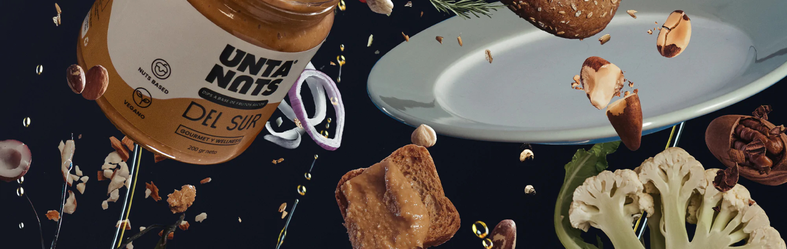

Sí y no, Untanuts están hechos 100% a base de nueces de árbol, no utilizamos leche de vaca, pero tenemos una textura inigualable que podrás disfrutar de la misma manera que un queso crema, pero más untable, más saludable y bueno para ti y para el planeta. Además, tenemos una deliciosa gama de texturas: Cremosos, Dyps, Paté y Mousse
Creemos que el futuro está en las plantas, vegetales y sobre todo vemos en los frutos secos un potencial único, una densidad nutricional que lo hace el alimento del futuro. Estamos orgullosos de decir que estamos completamente libres de productos cárnicos y siempre lo será.
Un producto Keto se basan en un plan alimenticio bajo en carbohidratos y rico en grasas y proteínas.
Productos keto son:
- Inmunonuts Ciboulette E
- Shitaki Z
- Ahumado kids
- Mediterraneo
- Caju Mex
- Del sur
Si, todos nuestros Untanuts son raw-food, por lo que sus propiedades nutritivas se conservan un 100%.
UNTANUTS
UNTANUTS se ha comprometido desde el comienzo a donar el 10% de sus utilidades a proyectos que generen una contribución al medio ambiente, la sociedad, educación y nutrición.
INFORMACIÓN
Estamos muy preocupados en como distribuimos nuestros productos y el impacto que generan desde que salen de nuestra fábrica, llegan a sus hogares, hasta que los terminan de disfrutar y desechar.
BLOG
Somos viajeros, curiosos y aventureros, creemos que la cocina no es un lugar de restricciones, es para explorar y para atreverse. Destapa UNTANUTS y destapa infinitas posibilidades para tu cocina.